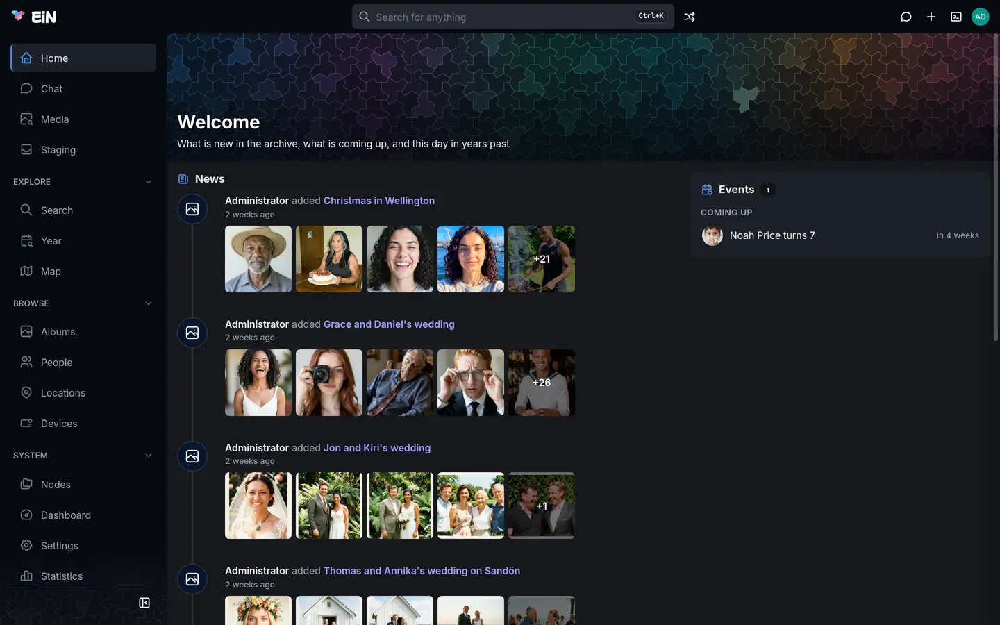
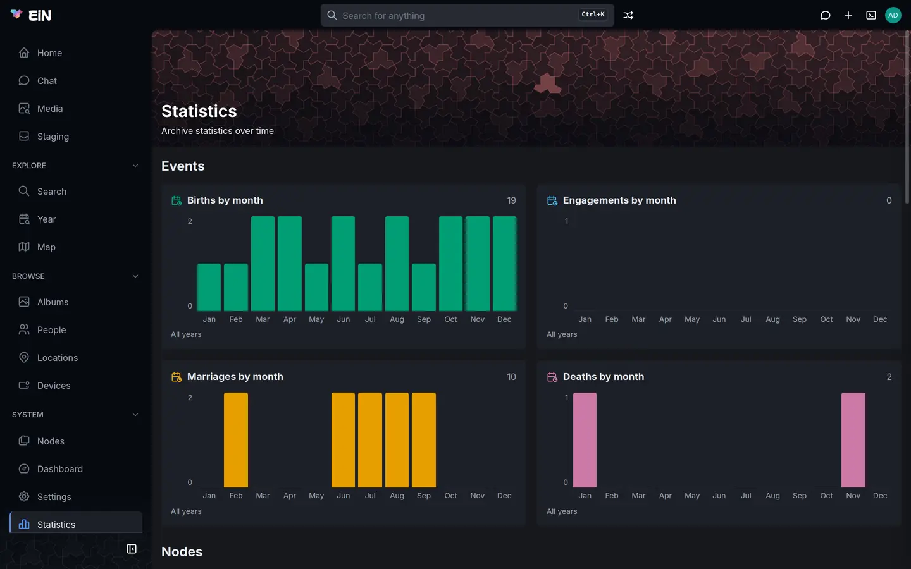

With the Archive installed, Home shows pictures taken on this day in earlier years, the albums people made lately, and the birthdays and anniversaries around today, and the Statistics page shows when in the year births, weddings and deaths fall. This page is for everyone who uses EiN. Home's layout and the rest of the Statistics page are EiN's own, and Home and statistics covers them.


The Archive fills all three of Home's sections. Like everything on Home, they show only what you may see: an album or a person that is not shared with you does not appear.
On this day
On this day is a row of round pictures, one for each year that has pictures taken on today's date, newest year first, up to 8. Under each ring it says how long ago that was, such as "1 year ago" or "12 years ago", and the year. The picture in the ring is the first one taken that day. This year counts too, so a picture taken today has a ring of its own, "0 years ago".
When there are more rings than fit, swipe the row sideways, or scroll it with a trackpad.
The row counts pictures in albums only. Pictures still in your staging area, and pictures with no date, are not part of it, and neither are pictures you may not see. When no year has anything for today, the section is not shown at all.
The same rings stand above the feed on the Media page; see Media, Year and labels.
Watch the memories story
- Press a ring. The story opens over the whole window, on black.
- At the top, a thin bar for each picture of that year fills as the picture shows; each picture stays 5 seconds. Under the bars it says how long ago it was, such as "7 years ago", and the date, such as "25 December 2019".
- The story plays that year's pictures in the order they were taken, up to 24 of them, then moves on to the next earlier year with pictures from this day, through up to 30 years that have pictures. After the last picture of the oldest year, it closes.
| To | With a finger or the mouse | With the keyboard |
|---|---|---|
| Go to the next picture | Tap or click anywhere but the left third | → |
| Go back a picture | Tap or click the left third | ← |
| Pause, and play again | Hold your finger or the mouse button down, and let go to play on; or press Pause, then Play | Space |
| See the pictures in the viewer | Open in the lightbox | |
| Close the story | Close | Esc |
Open in the lightbox opens the story's pictures, from every year, in the viewer at the picture you were on, with the details panel and everything else the viewer offers; see Viewing photos, videos and recordings.
A few things work differently from a slideshow in the viewer:
- The 5 seconds are fixed. Your Seconds per slide preference applies to the viewer's slideshow only; see Watch a slideshow.
- Each picture pans and zooms slowly whatever your Ken Burns effect preference says. On a device set to reduce motion, the pictures stay still.
- A video shows as a still from it, and a recording as an empty slide. Use Open in the lightbox to play them.
- While a picture is still loading, its bar waits, so a slow picture still gets its full time.
While the story plays, your screen is kept from going to sleep.
News
News is a timeline of the albums people made lately, newest first, up to 8. Each entry reads "<who> added <album>", for example "Helen Okafor added Christmas in Wellington", with how long ago under it:
| It says | When the album was made |
|---|---|
| "just now" | less than an hour ago |
| "3h ago" | less than a day ago, in hours |
| "yesterday" | one day ago |
| "4 days ago" | up to a week ago |
| "2 weeks ago" | up to a month ago |
| a date, such as "12 Jul 2025" | longer ago, in your browser's date format |
Under it is a row of the album's pictures, as many as fit and at most five, the last one marked with how many more the album holds, such as +21. Click the album's name or any of the pictures to open the album.
Beside each entry is the portrait of the person whose account made the album, when the account is linked to a person in the archive; otherwise a picture icon. See Your profile, favourites and trash.
What makes an entry:
- An album is made. Every way of making one counts: Create → Album, New album while adding pictures, and filing a group from staging as a New album or New private album. See Create an album and Sorting in staging.
- The time is when the album was made. Adding pictures to an album, renaming it or changing its dates does not bring it back to the top.
- Only albums in the album list count: folders inside an album, and the albums staging suggests to you, do not. An album moved to the trash leaves the news.
When nothing has been added yet, News says "Nothing has been added yet" and "What people add shows up here.", and when you are signed in the Archive offers Import media under it; see Import media.
Events
Events is a card of what comes round every year, for the days around today. How the card groups its entries, how far it looks and how it says when each falls are on Home and statistics. Each entry shows the face of the person it is about, or both partners' faces for a wedding anniversary. Click it to open the person's page.
What appears in Events
| Kind | Comes from | When it shows | It reads |
|---|---|---|---|
| Birthday | A person's Born date | Every year, up to the age of 110 | "Helen Okafor turns 68"; after the person's death, "Arthur Wrenfield would have turned 95" |
| Memorial | A person's Died date | Only in milestone years | "5 years since Peggy Wrenfield died" |
| Wedding anniversary | The From date of two partners' relation | Every year, up to and including the year the relation ended (Until) or the first of the two died, and for at most 75 years | "Jon Wrenfield and Kiri Wrenfield — 30 years married"; "… years together" for Partner, "… years engaged" for a relation whose kind is engaged |
Each of them needs a full date, with year, month and day. A date known only to the year or the
month, such as 1934 or 1934-05, has no day to come round on, so it makes no entry. Someone born
on 29 February has a birthday entry in leap years only. The first entry is the first anniversary:
nobody "turns 0".
Birthdays and memorials are read from the people on the People page. A Marriage event on a person's page does not make an anniversary; the From date on the partner relation does.
Milestones
A milestone is the 5th, 10th, 15th and 20th year, and then every 10th: 30, 40, 50 and so on. A milestone shows in bold, and milestones are the entries kept when the card runs out of room. Memorials appear only on milestones; birthdays and wedding anniversaries appear every year.
An example
In the Wrenfield family's archive, the Events card on 20 January 2026 shows four entries, the milestones in bold:
| Group | Entry | When |
|---|---|---|
| Coming up | Grace Price turns 40 | in 5 days |
| Jon Wrenfield and Kiri Wrenfield — 30 years married | in 2 weeks | |
| Thomas Wrenfield turns 65 | in 4 weeks | |
| Recently | 5 years since Peggy Wrenfield died | 3 days ago |
Make someone's dates appear
- Birthdays and memorials: open the person, press Edit, and type Born or Died as a
full date, such as
1958-05-03. See Edit a person. - Wedding anniversaries: give the partner relation a From date, such as
1996-02-03, when you choose Add partner on the person's Family tab, and an Until date if it ended for another reason than a death. Choose Married under Relationship for "years married". In the web interface this takes an administrator. To date a partnership that is already recorded, choose Add partner again and pick the same partner. See Partnerships and their dates.
Life events on the Statistics page
The Archive adds the Events section to the Statistics page, above EiN's own Nodes section.


It has four charts: Births by month, Engagements by month, Marriages by month and Deaths by month.
- Each has a bar for every month from Jan to Dec, counting all years together, as the line "All years" under it says. Rest the pointer on a bar to read its count, such as "Mar: 2".
- The number at the top right is the total. It also counts dates known only to the year, which are in no month's bar, so the bars can add up to less than the total.
- Births and Deaths count the Born and Died dates of people.
- Engagements and Marriages count the Engagement and Marriage events written on people's pages. A wedding written on both spouses counts twice, and a partnership dated only by a From date on the relation does not count. See Record a wedding.
When something goes differently
| What you see | Why, and what to do |
|---|---|
| On this day is missing | No picture in the albums you may see was taken on today's date in another year. Pictures still in staging and pictures without a date do not count; file them into an album and check their dates, see Dates and places of pictures. |
| A picture turns up under the day before or after | The day is counted in UTC, so a picture taken close to midnight can fall on the neighbouring day. A picture known only to a year or a month counts from the start of that period, so it can turn up on 1 January or the first of the month, or the day before in a time zone east of UTC. |
| The story says "Nothing was taken on this day in earlier years." | There are no pictures you may see from that date, for example when the story was opened from a link for another day. |
| An album you added pictures to is not in News | News shows when an album was made, not when pictures were added to it. |
| An entry reads "Somebody added …" | EiN could not tell which account made the album, for example because that account is gone. |
| A birthday or memorial is missing | The Born or Died date needs a day, the person must be on the People page, and birthdays stop at 110 years. Memorials show only in milestone years. The card also holds at most 16 entries, milestones first. |
| A wedding anniversary is missing | The partner relation needs a From date with a day. Anniversaries stop after the relation's Until year, after the year one of the two died, and after 75 years. A Marriage event alone does not make one. |
| Events is a day out, or On this day shows yesterday's pictures | Home takes today's date from your computer or phone. Check its date and time zone. |
| The Marriages chart shows twice as many weddings as there were | Each wedding was written as an event on both spouses, and each event counts. See Life events on the Statistics page. |
In the terminal
Home's onthisday, news and events commands gather what every installed module offers;
Home and statistics shows how to run them. The Archive's part
comes from onthisday-media, news-albums and events-anniversaries.
events --today 2026-01-20 in the Wrenfield family's archive prints the example above. A * marks
a milestone:
2026-01-17 3d ago * 5 years since Peggy Wrenfield died
2026-01-25 in 5d * Grace Price turns 40
2026-02-03 in 14d * Jon Wrenfield and Kiri Wrenfield — 30 years married
2026-02-19 in 30d Thomas Wrenfield turns 65onthisday prints one line for each year, such as 2019 Pictures taken on 25 December 2019, and
news one line for each album, such as 2026-10-11 18:02 Helen Okafor added Christmas in Wellington.
The Archive has more commands about the family's dates:
# in EiN's terminal
timeline --kind birth,death,anniversary # the family's history, looking back from today
dayinhistory 12-25 --years 20 --per-year 1 # the pictures of a day, by path
person-stats # the counts behind the Statistics page's Events chartstimeline is the archive's history, newest first: albums, births, deaths, birthdays, wedding
anniversaries, events, moves and GPS tracks. It looks back from today, never ahead, and stops a
person's birthdays at their death. By default it lists only milestone birthdays and anniversaries;
--birthdays all and --anniversaries all list every year. --kind, --year, --person,
--location and --tag narrow it.
The full options are in the reference for timeline,
dayinhistory, person-stats,
onthisday-media, news-albums and
events-anniversaries.
Related pages
- Home and statistics: the Home page and the Statistics page themselves.
- Family tree, events and homes: dates of birth and death, partners and their dates, and events on a person's page.
- Media, Year and labels: the Media feed with the same rings, and the Year page.
- Viewing photos, videos and recordings: the viewer and its slideshow.
- Albums: making the albums that fill News.
- Sharing: who sees which albums and people.